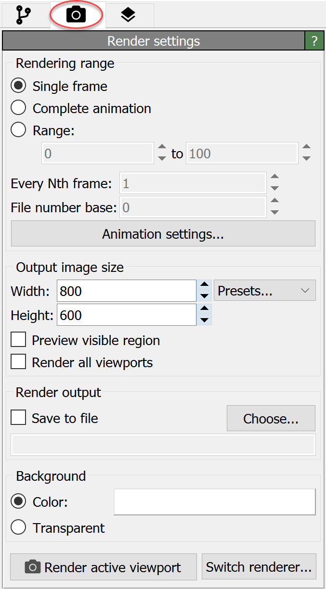

Rendering
{kind=link}
Rendering is the process of generating high-quality output pictures of the current dataset for publication or other presentation purposes. The rendering page of the command panel depicted in the screenshot on the right lets you control various settings related to rendering. For example, here you can determine whether OVITO should render a single image, a series of images, or a video. Furthermore, you can adjust relevant parameters such as the output resolution and the background color of the rendered pictures.
OVITO Pro provides several different rendering engines, which differ in terms of visual quality and rendering time. They are listed in the following table. The OpenGL rendering engine is the default choice. It is very fast and produces pictures that provide roughly the same basic visual quality as the interactive viewports of OVITO. The other available rendering engines can produce visually more appealing pictures but also require longer rendering times.
Rendering engine |
Description |
|---|---|
Hardware-accelerated renderer, which is also used for real-time display in the interactive viewports |
|
Software-based ray-tracing renderer, with support for ambient occlusion lighting, shadows and depth of field |
|
Another highly optimized software rendering engine with similar features as the Tachyon renderer but reduced memory requirements |
|
Scientific visualization ray-tracing renderer running on NVIDIA CUDA-capable GPUs providing almost real-time rendering performance. |